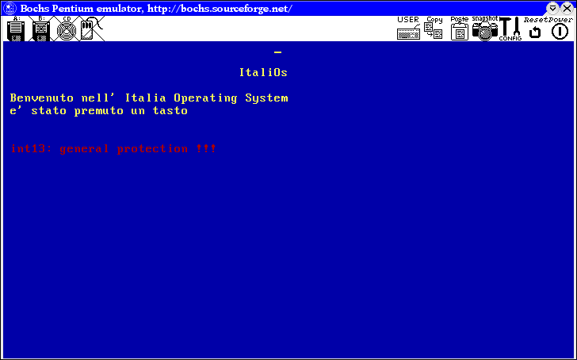
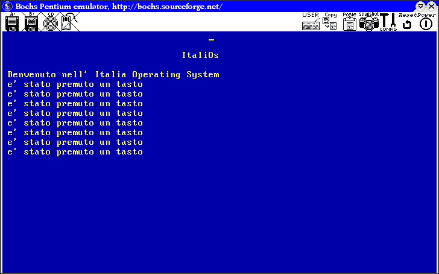

Ora cerchiamo di fare un piccolo programmino per provare se tutto il marchigegno implementato per gli irq e gli interrupt funziona.
Quando si preme un tasto viene generato l'irq numero 1. Useremo quindi la tastiera per provare gli irq!!!
L'handler è semplicemente questo:
void tastiera_handler(){
//svuotiamo il buffer della tastiera
inportb(0x60);
kout << "è stato premuto un tasto" << endl;
//diamo l'eoi
outportb(0x20, 0x20);
//ritorniamo dall'interrupt
asm("iret");
}
e nel main aggiungiamo una cosa del genere:
idt::add(tastiera_handler, M_VEC+1);
enable_irq(1);
Mandandolo in esecuzione avremo in output una cosa del genere:

Ad un attenta analisi vediamo che c'è un errore che facciamo: non salviamo i registri all'inizio dell'handler e alla fine dell'handler. quindi lo modifichiamo così:
void tastiera_handler(){
//salviamo i registri
asm("pusha");
//svuotiamo il buffer della tastiera
inportb(0x60);
kout << "è stato premuto un tasto" << endl;
//diamo l'eoi
outportb(0x20, 0x20);
//ripristiniamo i registri
asm("popa");
//ritorniamo dall'interrupt
asm("iret");
}
Se proviamo ad eseguire otteniamo una cosa del genere:
Come si può vedere abbiamo ottenuto ben poco. La causa di ciò è da attribuire al modo nel quale il gcc trasforma una funzione in assembly. Proviamo a disassemblare l'handler e vedere cosa ci ha prodotto. Per fare in modo che il compilatore ci faccia vedere il codice asm dobbiamo usare l'opzione -S
.globl _Z16tastiera_handlerv
.type _Z16tastiera_handlerv,@function
_Z16tastiera_handlerv:
subl $20, %esp
#APP
pusha /*salviamo tutti i registri*/
#NO_APP
movl $96, %edx
#APP
inb %dx,%al /*svuotiamo il buffer della tastiera*/
#NO_APP
pushl $10
subl $12, %esp
pushl $.LC3
pushl kout
call _ZN5VideolsEPKc /*stampiamo il messaggio*/
addl $20, %esp
pushl %eax
call _ZN5VideolsEc /*stampiamo l'endl*/
movl $32, %edx
movb $32, %al
#APP
outb %al,%dx /*diamo eoi*/
popa /*ripristiniamo i registri*/
iret /*usciamo dall'interrupt*/
#NO_APP
addl $28, %esp
ret
Vediamo che prima ancora che noi diamo la pusha il gcc modifica il valore dello stack, in questo modo la popa metterà dei valori sbagliati nei registri e la iret compirà il passo conclusivo per il #GP. Per risolvere questo problema bisogna implementare l'handler in asm e poi da questo chiamare la funzione vera e propria. Dobbiamo fare così:
asm(".globl internal_handler \n"
"internal_handler: \n"
"pusha \n"
"call _Z16tastiera_handlerv \n"
"movl $32, %edx \n"
"movb $32, %al \n"
"outb %al,%dx /*diamo eoi*/ \n "
"popa \n"
"iret \n" /* Exit interrupt */
);
e modifichiamo l'handler così:
void tastiera_handler(){
//svuotiamo il buffer della tastiera
inportb(0x60);
kout << "e' stato premuto un tasto" << endl;
}
Mhhh, non preoccupiamo del nome schifoso con cui abbiamo usato la call, dipende da come il gcc decodifica i nomi delle funzioni del c++ (presto risolveremo il problema). A questo punto funziona tutto a dovere.

E' abbastanza chiaro che bisogna implementare un modo semplice di usare gli irq, che non ci faccia preoccupare di tutti questi dettagli ogni volta. Il modo più semplice è usare una funzione e poi richiamare l'handler giusto. Ecco l'implementazione.
//il tutto è dichiaro come extern C per non avere problemi nel chiamare le varie variabili o funzioni
extern "C"{
//vettore per i 16 interrupt
void (*handler[16])();
//handler di default
extern void internal_handler(void);
//quando nessun handler è impostato per quell'irq
void null_handler(){ return;}
//si occupa di dare l'eoi
void free_irq(size_t number){
if(number < 8)
outportb(m_pic, eoi);
else
outportb(s_pic, eoi);
return;
}
void _do_irq(){
//determino quel'è l'irq che si sta servendo
byte current_irq = get_cur_irq();
//quindi lo eseguo
(*handler[current_irq])();
//dò l'eoi
free_irq(current_irq);
return;
}
asm(".globl internal_handler \n"
"internal_handler: \n"
"cli /*disabilito gli interrupt*/ \n "
"pusha /*salvo tutti i registri*/ \n "
"call _do_irq /*eseguo l'handler vero e proprio*/ \n"
"popa /*ripristino i registri*/ \n"
"sti /*riabilito gli interrupt*/ \n"
"iret /* esco dagli interrupt */ \n"
);
/*funzione per aggiungere un irq*/
void add_irq(void (*func)(), byte number){
handler[number]=func;
return;
}
} //fine dell'extern
/*questa funzione è dinuovo a regime di c++*/
void init_irq(){
Init8259(); //inizializzo l'8259
//imposto i vari handler
for(int i = 0; i < 16; i++){
if(i < 8)
idt::add(internal_handler, M_VEC+i);
else
idt::add(internal_handler, S_VEC+i);
add_irq(null_handler, i);
}
return;
}
Bene! Arrivati a questo punto la gestione degli irq è diventata banale e ci si può concentrare solo sull'handler. Tutto il codice è nei file irq.cc e irq.h.
Anche per questa volta abbiamo finito. In questa lezione abbiamo implementato molte cose, dalla gdt agli irq passando per la idt. La prossima volta implementeremo un gestore della memoria che sfrutti il paging.